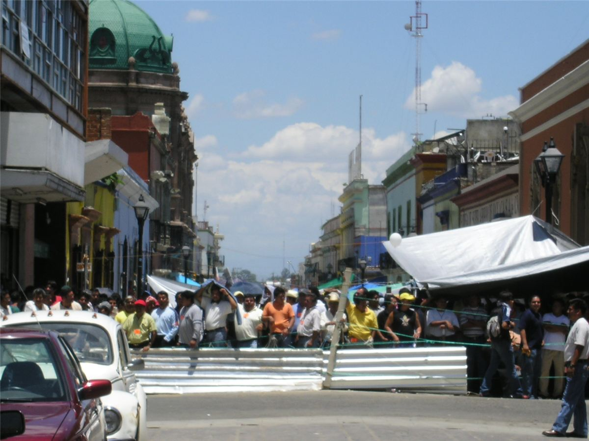
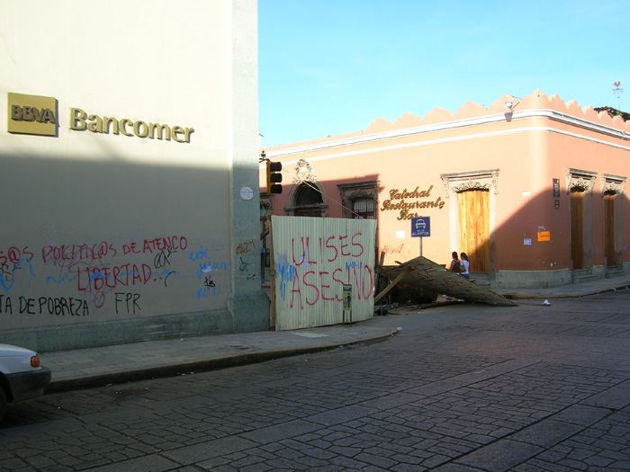
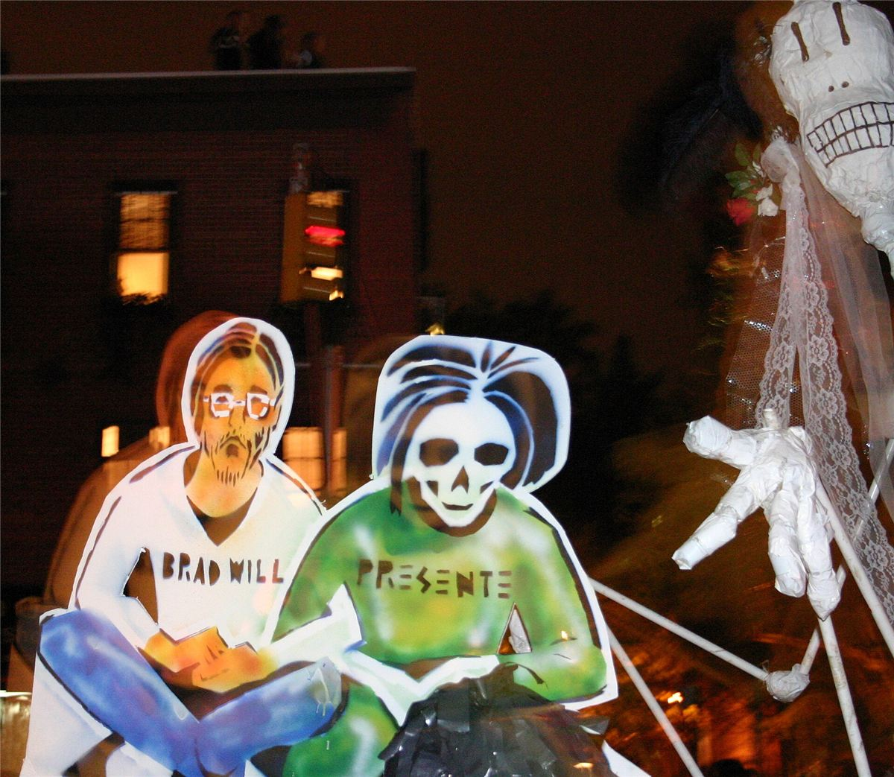

En 2006, des camarades zapatistes ont parlé à Mamie d'une ville voisine, dans le sud du Mexique, où les institutrices et les instituteurs avaient chassé la police et où les habitants tenaient les rues. On l'a appelée la commune d'Oaxaca, en écho à celle de Paris. Elle a duré cinq mois.
Mai-juin 2006 : la grève des enseignants
Chaque année depuis vingt-cinq ans, les enseignantes et enseignants de l'État d'Oaxaca, l'un des plus pauvres du Mexique, font grève et campent sur le zócalo, la place centrale de la capitale. En mai 2006, ils réclament de quoi faire fonctionner les écoles rurales. Le 14 juin, à l'aube, le gouverneur Ulises Ruiz Ortiz envoie 3 000 policiers les déloger. La bataille de rue dure des heures : plus d'une centaine de blessés. Mais les grévistes et les habitants reprennent la place.
Naissance de l'APPO
Quelques jours plus tard, syndicats, communautés indigènes, organisations de quartier, coopératives, associations et parents d'élèves fondent l'Assemblée populaire des peuples d'Oaxaca (APPO). Le 17 juin, elle réinstalle les campements sur le zócalo et se déclare autorité de la ville. Elle n'a qu'une revendication commune : que le gouverneur s'en aille. Un de ses slogans : « Aucun chef ne résoudra nos problèmes. »

Une ville tenue par ses habitants
Des barricades se dressent dans les rues pour empêcher les raids de la police. En juillet, l'APPO bloque la Guelaguetza officielle, la grande fête folklorique vendue aux touristes, et organise à la place une Guelaguetza populaire et gratuite. Le gouverneur quitte l'État pendant des mois. Le 1er août, le mouvement s'empare de stations de radio et de télévision pour se parler à lui-même et alerter des attaques.

Les escadrons de la mort
La réponse du pouvoir vient la nuit : des hommes armés, membres du parti au pouvoir (le PRI) ou policiers en civil, attaquent les radios et les barricades. Les premiers morts tombent en août. Des observateurs des droits humains accuseront les autorités d'avoir utilisé des escadrons de la mort et procédé à des exécutions sommaires.
27 octobre : Brad Will
Le 27 octobre 2006, des hommes armés tirent sur une barricade. Ils tuent l'instituteur Emilio Alonso Fabián, Esteban López Zurita et un journaliste américain d'Indymedia, Brad Will, qui filmait la scène. Ses images montrent les manifestants armés de pierres face aux tireurs. Des journaux mexicains identifient certains tireurs comme des élus et des policiers locaux ; la justice, elle, tentera d'accuser un manifestant.

29 octobre - novembre : l'entrée de la police fédérale
Le président Vicente Fox saisit le prétexte : le 29 octobre, environ 3 500 policiers fédéraux et des milliers de militaires entrent dans la ville avec des blindés et des hélicoptères. Le zócalo est repris. Le 2 novembre, la police tente de prendre l'université, où la radio de l'APPO émet encore : des milliers de personnes l'en empêchent. Les semaines suivantes, la répression s'abat et les arrestations se multiplient. Selon des observateurs, plus de vingt-sept personnes ont été tuées au total. Ulises Ruiz reste gouverneur jusqu'à la fin de son mandat.
Chronologie
- Mai 2006Grève et campement des enseignants sur le zócalo.
- 14 juin 20063 000 policiers attaquent le campement ; la place est reprise.
- 17 juin 2006L'APPO se déclare autorité de la ville.
- Juillet 2006Guelaguetza populaire à la place de la fête officielle.
- 1er août 2006Le mouvement prend des radios et une télévision.
- 27 octobre 2006Brad Will et deux autres personnes tuées sur une barricade.
- 29 octobre 2006La police fédérale entre dans Oaxaca.
- Novembre 2006Répression massive, arrestations, disparitions.
Dans ce dossier
- L'assemblée des assemblées : comment l'APPO décidait.
- Commune ou mouvement d'opposition ? : ce qu'en pensent les libertaires.
Sources et pour aller plus loin
Sur le web
- La rébellion d'Oaxaca en 2006 (en anglais)Le récit mois par mois, l'organisation de l'APPO.
- Brad Will (en anglais)Le journaliste d'Indymedia tué le 27 octobre 2006.
Sur le site
- Les zapatistesLes voisins du Chiapas, qui ont soutenu l'APPO.
- La Commune de ParisL'autre commune, en 1871.
Dossier écrit à partir des articles Wikipédia cités, à relire par la bande. Sources vérifiées le 13 novembre 2026.
Dossier rédigé par la bande à Mamie à partir de travaux d'historiennes et d'historiens et de textes des mouvements concernés. Libre de reproduction.